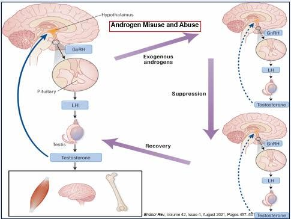
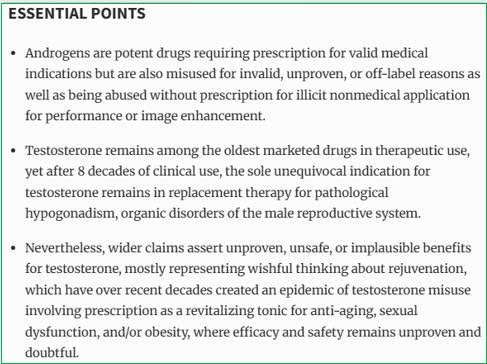

Androgen abuse (testosterone/steroids) is an increasing public health concern, particularly among young men seeking muscular or image enhancement. Although most achieve biochemical (normal testosterone) recovery within 12 months of cessation, mood disturbances, sexual dysfunction, and fatigue is widely reported for years afterward*.
*The best way to avoid the dangers of anabolic steroids or unnecessary testosterone medication use is to AVOID it in the first place!
This study of community-dwelling men grouped as non-users, current users, or past users who had ceased within the last 12 months dug deeper.
--> 247 men were included: 50 non-users, 125 current users, 72 past users. Self-reported psychiatric diagnoses were 2.5-fold higher among current and past users than non-users.
Past users reported significantly worse mood, anxiety, sexual function, and quality of life versus non-users.
Psychiatric comorbidity was independently associated with depression (p=0.001), anxiety (p<0.001), and poorer quality-of-life (p<0.05); while lower testosterone showed only a modest association with depressive symptoms (p=0.03).
Conclusion: Among men in the first year after stopping androgen abuse, psychological symptoms and reduced quality-of-life were most strongly associated with psychiatric comorbidity than biochemical recovery. These findings challenge the assumption that androgen withdrawal symptoms are predominantly driven by hypogonadism, and supports developing psychological and behavioural interventions, rather than pharmacological, to support androgen withdrawal in men.
PMID: 41818709
#testosterone #steroids #AAS #men


